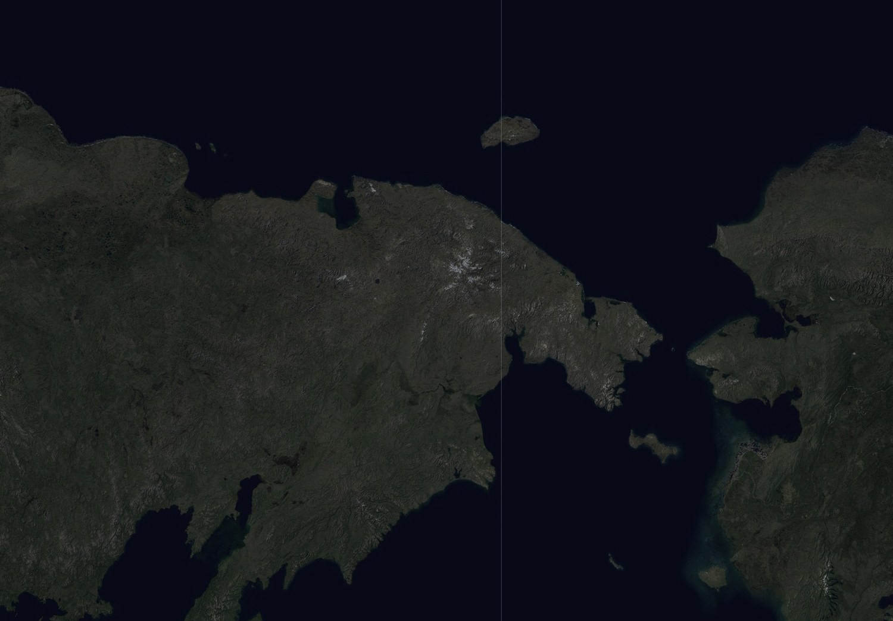
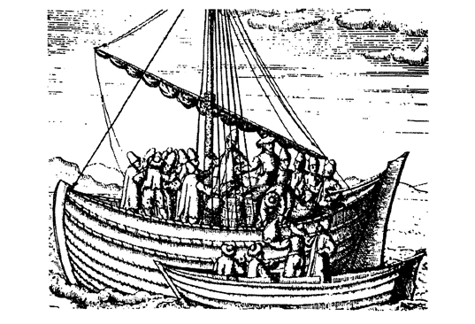
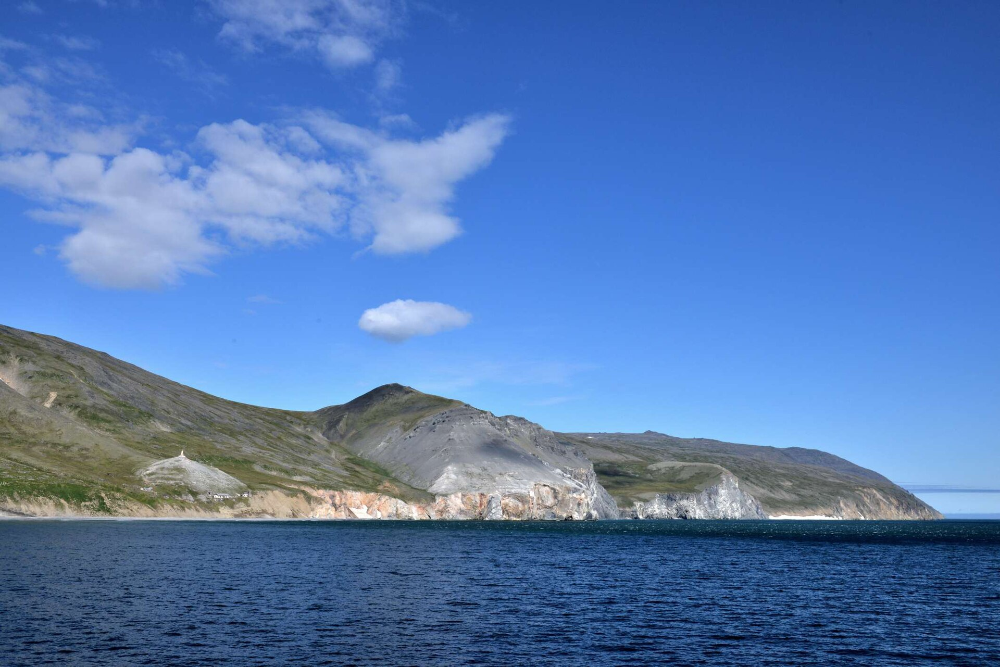
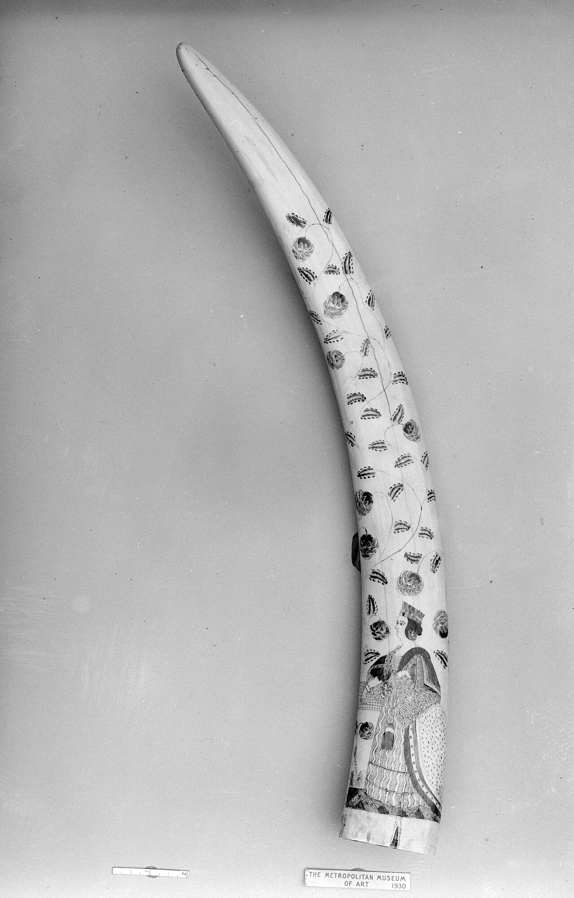
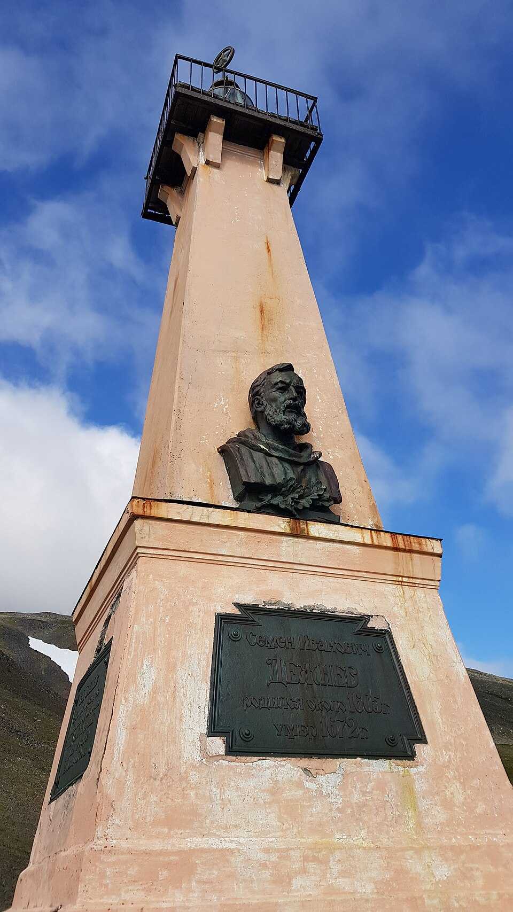

Весь поход за сорок семь секунд: как открыть край света и не заметить этого. Кадры идут по подлинному листу атласа Ремезова 1701 года, голос тот же, что в аудиогиде. Дальше на странице — то же самое, но подробно и с картой.
Летом 1648 года из устья Колымы вышли семь кочей — деревянных промысловых судов поморской постройки. Девяносто человек шли искать реку Погычу, богатую «рыбьим зубом» — моржовой костью, которая стоила дороже соболя. Никакого пролива они не искали: о том, что Азия и Америка разделены, в мире тогда не знал никто. Нажмите на точку — и путь пойдёт дальше.

Подписи и точки с карты исчезнут. Вам назовут место — надо ткнуть в него пальцем прямо по карте наверху. Четыре точки, шестьдесят секунд, по десять баллов за попадание.
Через полвека после похода тобольский картограф Семён Ремезов составил «Чертёжную книгу Сибири» — первый русский географический атлас. Перед вами подлинный лист в разрешении 5100 × 7201 точек: можно приблизиться до отдельного росчерка пера. Это ровно та картина мира, в которой открытие Дежнёва не значилось.
Золотых точек-подсказок здесь нет намеренно. Подписи сделаны скорописью XVII века, и выдавать наши догадки за атрибуцию мы не станем. Рассматривайте свободно — ниже написано, что стоит заметить.
Градусной сетки на чертеже нет. Расстояния здесь меряются не градусами, а днями пути: «до того острогу ходу семь ден». Карта отвечает не на вопрос «где это», а на вопрос «как туда дойти» — и этим отличается от всего, к чему мы привыкли.
Приблизьте любую речную систему — она разветвлена до мелких притоков. А морской берег часто дан общей линией. Причина простая: по рекам ходили, по ним возили меха и ясак, их знали. Море было краем, а не дорогой.
Условных знаков ещё нет — есть рисунок. Острог изображается башенкой с частоколом, монастырь — церковкой. Карту не читают по легенде, её рассматривают.
Пояснения написаны не на полях, а вписаны в само поле чертежа, между реками и горами. Ремезов не разделял карту и рассказ — для него это была одна вещь.
Отписку положили в короб якутской воеводской канцелярии, и она пролежала там дольше, чем Дежнёв прожил после похода. Восемьдесят восемь лет — это дольше средней человеческой жизни того времени: успело родиться, вырасти и умереть поколение, которое могло бы знать о проливе со школьной скамьи. Как именно бумага вышла из короба — ниже, в разделе «История».
Экспедиция шла за моржовым клыком: «рыбий зуб» ценился дороже соболя, и слухи о реке Погыче, где лежбища моржей, будоражили Колыму. Географическое открытие оказалось побочным результатом торговой ходки. Дежнёв и в отписках пишет не «я открыл пролив», а описывает, где какой промысел.
Коч — поморское судно, доски которого сшивались корнями можжевельника или вицей. Корпус делали яйцевидным: сжатый льдами, он не ломался, а выдавливался наверх. На таких судах девяносто человек пошли в море, о котором не знали ничего.

После крушения остатки отряда вышли к Анадырю. Дежнёв провёл на этой реке двенадцать лет, поставил Анадырский острог, а в 1652 году нашёл огромное моржовое лежбище — то самое богатство, за которым и шли. Он не вернулся домой — он остался жить в том месте, куда его занесло.
Добравшись в 1664 году до Москвы, Дежнёв подал челобитную: оклада ему не выдавали девятнадцать лет. Не месяц и не год — все девятнадцать он служил, ходил в море, ставил острог и жил тем, что добудет сам. Человек, прошедший край материка, приехал в столицу не за славой, а за своим неполученным жалованьем.
Двадцатого июня 1648 года из устья Колымы в Ледовитое море вышли семь кочей. Возглавляли поход двое: казак Семён Иванович Дежнёв, служилый человек с двадцатилетним стажем в Сибири, и торговый человек Федот Алексеев Попов. Девяносто человек. Цель — река Погыча, о которой рассказывали, что в её устье лежбища моржа, а моржовый клык, «рыбий зуб», в Москве стоил дороже соболя.
Надо понимать, куда они шли. Восточнее Колымы для русского человека семнадцатого века не было ничего — ни карт, ни рассказов, ни уверенности, что море там вообще проходимо. Попытки были и раньше, и все заканчивались одинаково: льды, поворот, возвращение. Никто в мире тогда не знал, соединяются Азия и Америка или разделены. Этот вопрос был открыт, и его никто не собирался решать в тот июнь.
Море съело экспедицию по частям. До сентября дошли не все кочи: одни разбились, другие пропали. И двадцатого сентября 1648 года оставшиеся обогнули то, что Дежнёв в отписке назвал Большим Каменным Носом — скалистый мыс, за которым берег поворачивал на юг. Тысяча четыреста километров от устья Колымы. Это была крайняя восточная точка Азии, и они прошли между двумя материками, не подозревая, что делают.

Дальше было крушение. Коч Дежнёва выбросило южнее устья Анадыря, и остатки отряда пошли пешком — зимой, без запасов, по земле, которой не знали. Дошли не все. Тем, кто дошёл, предстояло обживаться: Дежнёв поставил на Анадыре острог и остался там на двенадцать лет. В 1652 году он нашёл то самое лежбище моржей — цель похода, добытая через четыре года после его начала.
В 1664 году он привёз в Москву 289 пудов моржовой кости — около четырёх с половиной тонн. Казна продала их на 17 340 рублей, Дежнёв получил свою долю: пятьсот рублей соболями, сумму по тем временам огромную. Тогда же он подал челобитную о жалованье, которое ему не выплачивали девятнадцать лет. Про Большой Каменный Нос в бумагах речи не шло: с точки зрения приказа это была не заслуга, а подробность маршрута.

А его отписки остались в Якутске. Они пролежали в архиве воеводской канцелярии почти девяносто лет, пока в 1736 году их не нашёл историк Герхард Фридрих Миллер, разбиравший сибирские бумаги для описания края. Только тогда стало ясно, что казак прошёл пролив за восемьдесят лет до Витуса Беринга, который сделал это в 1728 году с картами, приборами и государственным заданием. Имя на карте осталось за Берингом — оно уже было там. Дежнёву достался мыс, тот самый Большой Каменный Нос, и то лишь в 1898 году.

Здесь стоит остановиться на одной вещи, о которой обычно не говорят. Открытие не состоялось не потому, что его скрыли, и не потому, что кто-то был против. Оно не состоялось потому, что никто не понял, что произошло. Дежнёв описал то, что видел, честно и подробно. Просто в 1648 году не было вопроса, на который его отписка была ответом. Вопрос появился позже — и тогда пришлось искать ответ заново.
Человек одним абзацем. Семён Иванович Дежнёв (около 1605 — начало 1673). Родом с русского Севера, с Пинеги или из Великого Устюга. Служил в Тобольске, Енисейске, Якутске; собирал ясак, ходил в дальние ходки, был не раз ранен. Прижизненных изображений Дежнёва не существует — все портреты, которые вы видели, придуманы художниками позже. Мы их здесь не показываем.
Название на карте появляется не тогда, когда человек проходит место, а тогда, когда об этом узнаёт наука. К моменту, когда отписки Дежнёва прочитали, экспедиция Беринга была уже описана, опубликована и нанесена на карты Европы. Переименовывать было поздно и незачем — географическое сообщество работает с тем, что напечатано. Дежнёву достался мыс, и это справедливее, чем кажется: именно мыс он и видел, а пролива, как явления, он не видел никогда.
Коч — поморское судно с яйцевидным корпусом, доски которого сшивались вицей, а не сколачивались гвоздями. Сжатый льдами корпус такой формы не ломается, а выжимается вверх. Гибкость сшивки давала то, чего не давало жёсткое крепление: судно играло на волне и во льдах. Европейские корабли того времени в такие льды не ходили — не потому что были хуже, а потому что были построены для другого моря.
Дежнёв писал не научный труд, а служебную бумагу — отписку в приказ: где был, что взял, сколько людей потерял, сколько добыл ясака. Из-за этого его открытие и утонуло: в жанре отписки нет места для фразы «здесь заканчивается материк». Миллер, читавший эти бумаги через девяносто лет, увидел в них географию потому, что искал географию. Тот же текст, прочитанный по-разному, дал разный результат.
Четыре с половиной тонны клыка, проданные на 17 340 рублей, — это цифра, которая мало что говорит сегодня. Для сравнения: годовое жалованье рядового казака в Сибири составляло несколько рублей. Именно поэтому за «рыбьим зубом» шли туда, откуда можно не вернуться, — экономика похода была устроена так же, как позже устроят золотую лихорадку.
Тысяча шестьсот сорок восьмой год. В Европе Вестфальским миром заканчивается Тридцатилетняя война — континент выходит из самой страшной бойни своего времени. В Англии идёт гражданская война, до казни короля остаются месяцы. Голландские корабли ходят в Ост-Индию, испанские — в Америку, и обе державы считают, что мир уже поделён и описан.
В этот же год девяносто человек на сшитых нитками лодках выходят в море, которого нет ни на одной карте мира, и проходят между двумя континентами. Об этом не узнают ни в Лондоне, ни в Амстердаме, ни даже в Москве. Разница не в смелости — смелых хватало везде. Разница в том, что европейские плавания снаряжали компании и короны, которые требовали отчёта и публикации, а этот поход снаряжали промышленники за свой счёт, и отчитываться надо было только в приказную избу.
Отсюда простой вывод, ради которого и стоит держать эту страницу в музее: первенство — это не только дойти первым. Это ещё и суметь рассказать. Дежнёв сделал первое и не сделал второго, и восемьдесят лет история шла так, будто его не было.
Шли за моржовым клыком, который стоил дороже соболя, к реке Погыче. Пролив они прошли попутно и не поняли, что прошли.
Отписки пролежали в якутском архиве с 1648 до 1736 года — их нашёл историк Миллер. К тому времени пролив уже прошёл Беринг.
Правда. Доски сшивались вицей, а яйцевидный корпус при сжатии льдами выдавливался вверх, а не ломался.
Прижизненных изображений нет. Все «портреты Дежнёва» придуманы художниками позднее — поэтому на этой странице их нет.
Итог: 0 из 70 (карта — 40, вопросы — 30).
Ответы собраны из документированных отписок и челобитных Дежнёва и из работ историков. Это реконструкция голоса, а не запись его подлинной речи.
❤ Поддержать музей. Музей делает крошечная команда, и он бесплатный для всех — без рекламы, регистрации и платных разделов. Если этот поход отсюда виден лучше, чем из учебника, помочь можно тремя способами, и первые два не стоят денег.
У каждого дня года свой повод — выход экспедиции, открытие, основание острога. Листайте стрелками.